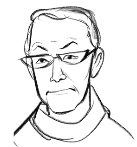
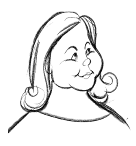
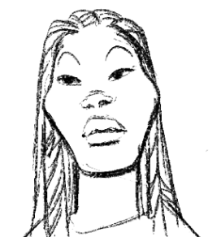

Usuarios/Personas

Gerardo, 61
Busca una diseñadora o alguien con habilidades en la programación para crear una página web en donde pueda reunir sus obras literarias. Quiere que la página sea simple, fluida y comprensible.

Juana, 47
Busca una diseñadora que le diseñe toda la gráfica de su nueva panadería y que le de consejos de cómo hacerse cargo de esta por sí misma.

Carola, 32
Busca una diseñadora y practicante que aporte principalmente en la generación de ideas innovadoras, el diseño de servicios y co creación con consumidores de su marca.